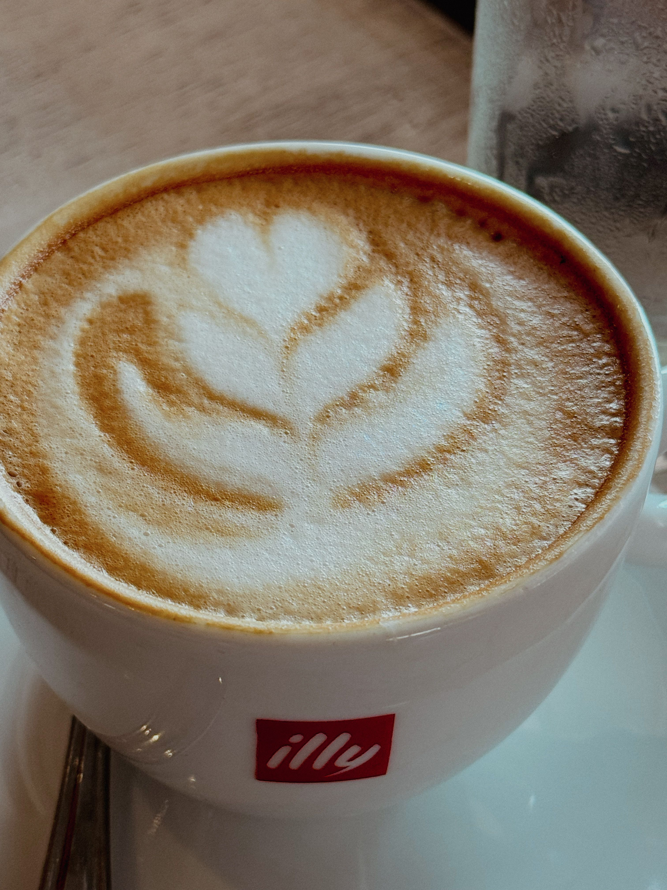
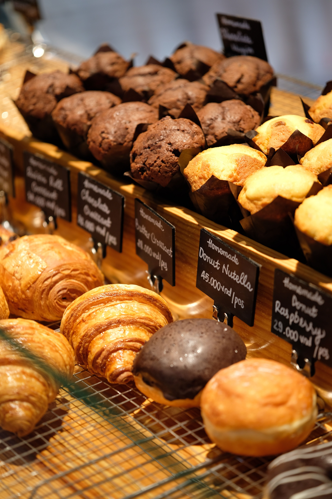
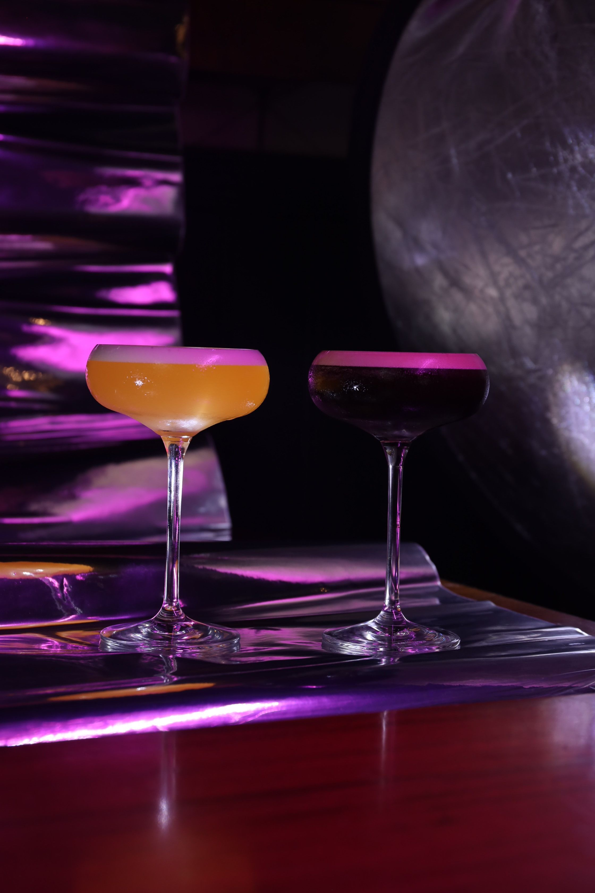

Lavender Honey Latte
Our signature morning drink, with house-made lavender syrup and local honey.
6 PM – 1 AM
Moonlit cocktails, small plates, and live music on Fridays.
See the Bar MenuWhen the sun is up, X's & O's is a bright little café for coffee dates, laptop mornings, and slow brunches. When the lights go down, we dim the lamps, turn up the music, and become a neighborhood cocktail bar. Read our story.

Our signature morning drink, with house-made lavender syrup and local honey.

Croissants, muffins, and scones baked in-house every morning.

Butterfly-pea gin, lemon, and elderflower that turns purple as you sip.
Open every day. Walk-ins welcome, or reserve a table for the bar.